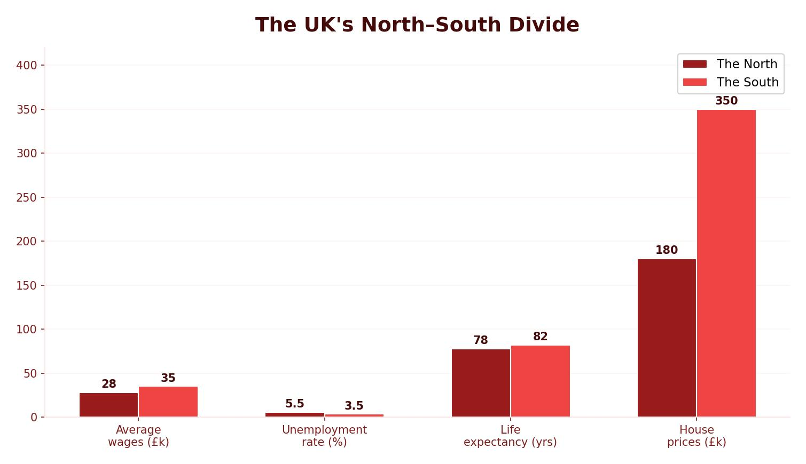

The North-South Divide
The north-south divide refers to the significant economic and social differences between the south of England (particularly London and the South East) and the north of England (and other parts of the UK). Industries in the north were shut down during the 1970s and 1980s, causing mass unemployment and deprivation that still affects these regions today.
Evidence of the divide: average pay in the south is £28,000 compared to £24,000 in the north. Average house prices are £265,000 in the south versus £137,000 in the north. Unemployment is 4.7% in the south but 8.1% in the north. Life expectancy in Cambridge is 79.5 years compared to 75.7 in Liverpool.

Strategies to Reduce the Divide
Governments have tried several strategies to reduce the gap between north and south:
- The Northern Powerhouse — a plan to link northern “core” cities (Liverpool, Leeds, Manchester, Sheffield, Hull and Newcastle) to create a powerful economic region that can compete with London. The aim is to attract investment in science and innovation and improve transport links between these cities. Critics argue the plan is too focused on Manchester and funding is unclear.
- Devolving powers — giving local authorities more power to make spending decisions. Greater Manchester’s elected mayor received £1 billion of devolved funds. The BBC relocated to MediaCity UK in Manchester in 2011, attracting over 250 companies through a multiplier effect.
- Local Enterprise Partnerships (LEPs) and Enterprise Zones — LEPs are partnerships between local authorities and businesses. Lancashire LEP aims to create 50,000 jobs. Enterprise Zones offer tax breaks of up to £275,000 over five years. Warton Enterprise Zone in Lancashire provides 6,000 high-skilled engineering and manufacturing jobs.
Transport Infrastructure
Transport improvements are a key strategy for reducing the north-south divide and boosting the UK economy. The UK government has invested £15.2 billion in over 100 major transport schemes.
Road — Smart Motorways
Smart motorways use traffic management methods to increase capacity and reduce congestion. They use the hard shoulder as a running lane and variable speed limits to control traffic flow. They are being created across the UK motorway network, with extensive work on the M6. Advantages include improved traffic flow and better accident management. However, they are expensive, time-consuming to build and there are serious concerns about safety.
HS2 was a proposed high-speed rail line designed to better link the north and south. Arguments for: it would move millions of trips from road and air to rail, create 100,000 jobs (70% outside London), increase UK GDP by £15 billion per year and free up existing rail for freight. Arguments against: the cost escalated from £32.7 billion to over £50 billion, around 600 homes would be demolished, 250 acres of green belt land and sites of scientific interest would be affected, and the money could be spent on other priorities. The project has since been significantly scaled back.
Sea — Liverpool2
Peel Ports invested £400 million building Liverpool2, one of Europe’s most advanced container terminals. It can handle the world’s largest container ships, doubling Liverpool’s capacity to 1.5 million containers per year. The port creates thousands of jobs, boosts the north-west economy and reduces freight traffic on roads.
Air — Heathrow Expansion
Heathrow handles approximately 480,000 flights and 73 million passengers per year and is at maximum capacity. A third runway was proposed to keep London competitive with New York and Paris. It would boost the UK economy by £200 billion and the airport already employs 76,000 people with a similar number supported by the multiplier effect. However, Heathrow is already the UK’s largest emitter of CO&sub2;, noise pollution would worsen for 1 million people in the flight path, and at least one village would be demolished.
The UK’s Place in the Wider World
The UK has strong global connections through four main links:
- Trade — UK exports of goods are worth over £250 billion per year. The UK trades globally with links to the USA, Europe and Asia. Following Brexit, the UK is forming new trading links outside the EU single market.
- Culture — the English language gives the UK cultural links worldwide. British TV exports (Downton Abbey, Sherlock, Doctor Who) have almost quadrupled in international sales since 2004. Migrants have enriched UK culture with food, music, film and festivals like the Notting Hill Carnival.
- Transport — Heathrow is one of the world’s busiest airports, acting as a global hub. The Channel Tunnel links the UK to mainland Europe by rail. Southampton is a major cruise liner port.
- Electronic communications — most transatlantic cables carrying internet and phone connections between Europe and the USA are routed through the UK. The UK is a major hub for global IT firms.
The Commonwealth is an association of 53 countries with nearly 2 billion people (30% of the world’s population). It promotes world peace, democracy and the fight against poverty. The EU is a trading group of 27 countries. The UK left in 2020 (Brexit) but retains other international roles through the UN, NATO and as a major aid donor.
Advantages of EU membership: low prices through the single market with no customs taxes, free movement of people to study and work, over 3.5 million jobs generated, worker protection through EU directives. Disadvantages: costly membership (£300–£873 per head), overcrowding in UK cities, not all policies were efficient (e.g. the Common Agricultural Policy), and the single currency posed problems for some countries. The UK’s decision to leave the EU means it must now form new independent trade agreements.